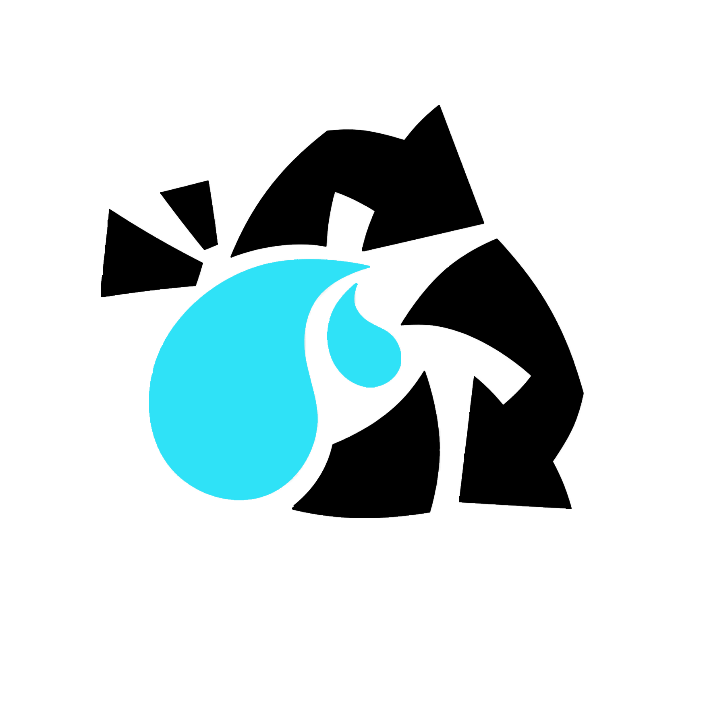

Sobre Nosotros
En Windfall Games nos gusta crear nuestros propios juegos tratando de hacerlos lo mas originales que se puedan, o sea no copiando a otros juegos ya existentes, posiblemente tomando una que otra idea pero modificandola para que sea mejor
aparte de que pueda tener una mejor experiencia al jugarlo y no sea un tipico juego como todos puede
mejorar en la forma en jugarlo, la experiencia es lo que buscamos mejorar, como lo podrian ser los graficos ya que la mayoria de los juegos tiene graficos buenos pero no tan realistas y es lo que buscamos mejorar esa parte para que a la gente le guste.
A la gente ultimamente le gusta los juegos que se vean realistas que tengan una buena jugabilidad y eso es lo que encontraran en Winfall Games juegos originales con una buena experiencia de juego en segunda dimension o realidad aumentada
aunque tambien nos gusta recordar esos viejos momentos en los que los juegos eran puros pixeles asi que tratamos de hacer remasterizaciones de juegos para que sean compatibles con las nuevas generaciones de consolas y no queden en el olvido
pero como dijimos lo que queremos es destacar por nuestra originalidad y experiencia de juego al jugar videojuegos

Todos los derechos reservados Imagenes, Logo, Banner, Etc. ©2020
©2020 Windfall Games. Fue Creado Por Alumnos Del Cobaem 19 Tecamac
Del Grupo 602. Turno Matutino. ©2020